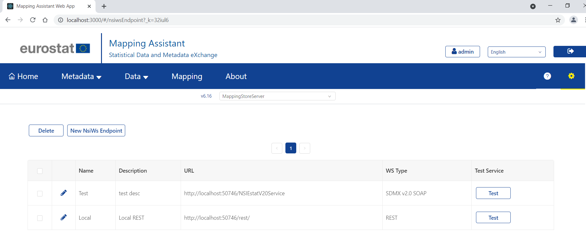
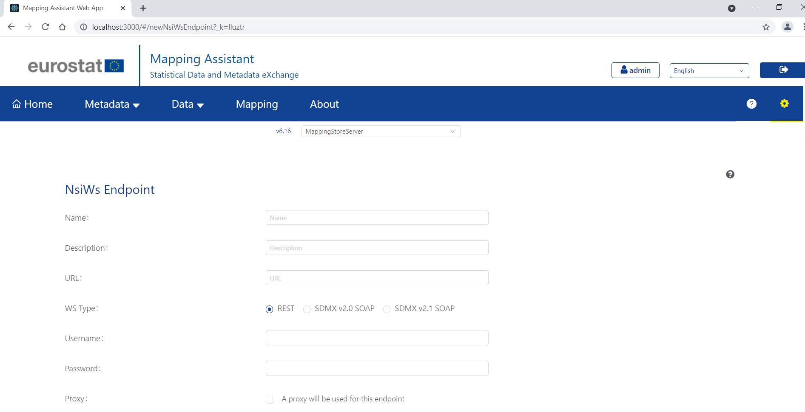

This screen contains the list with all nsiws endpoints. Admin can add, edit or delete a nsiws endpoint through the available buttons on the upper left corner. Editing is done through the button (pencil icon) on the table.

When Admin presses the New NSIWS Endpoint button, a form appears.

After filling the appropriate fields, saving is performed through save button.